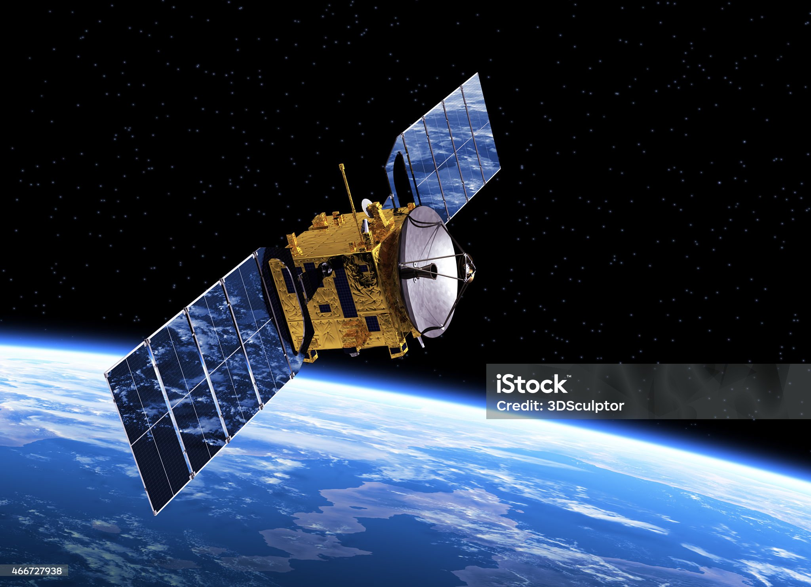

О проекте
SOLAR.OBSERVATORY — это глобальная научно-образовательная инициатива, созданная на стыке фундаментальной астрофизики и передовых технологий интерактивной визуализации. Наша миссия — стереть границу между академической наукой и широкой аудиторией, предоставив каждому энтузиасту космоса прямой доступ к исследовательской инфраструктуре.
Мы непрерывно обрабатываем потоки данных, поступающие от крупнейших мировых радиотелескопов и орбитальных зондов. На основе этих массивов алгоритмы генерируют высокоточные трехмерные симуляции физических процессов, протекающих в Солнечной системе. Виртуальная лаборатория позволяет изучать тектонику Марса, штормовую активность Юпитера и динамику ледяных колец Сатурна с беспрецедентной детализацией.
Проект функционирует как открытая экосистема. Студенты, исследователи и любители астрономии могут бесплатно использовать наши инструменты для моделирования гравитационных взаимодействий, анализа спектрографических карт и ведения самостоятельных наблюдений за звездным небом.
Реальные данные
